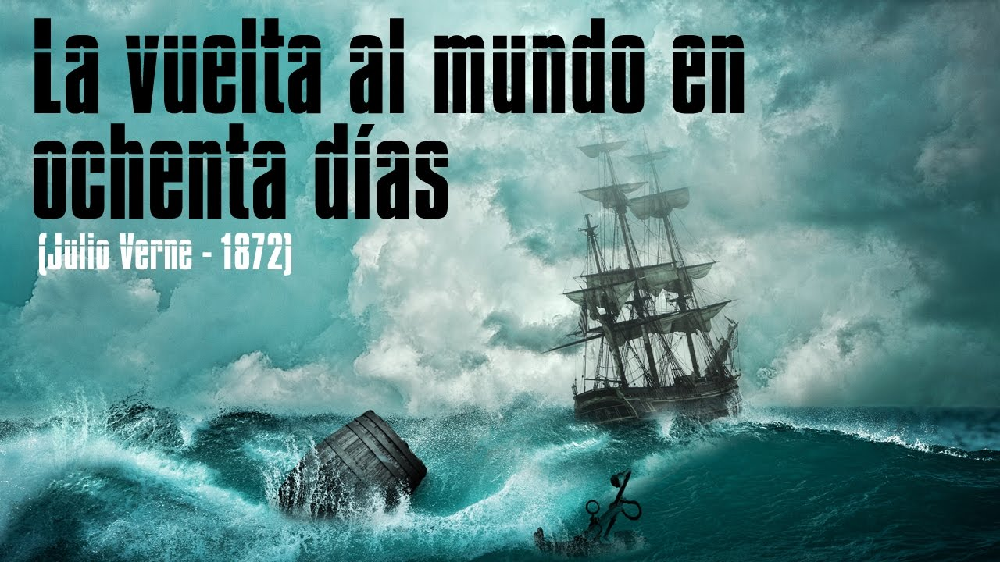

La vuelta al mundo en ochenta dias
Volver a la Pagina Principal

La vuelta al mundo en ochenta días (Le Tour du monde en quatre-vingts jours) es una novela del escritor francés Julio Verne publicada por entregas en Le Temps desde el 7 de noviembre (número 4225) hasta el 22 de diciembre (número 4271) de 1872, el mismo año en que se sitúa la acción. Después, sería publicada íntegramente el 30 de enero de 1873.
Las peripecias del británico Phileas Fogg y de su ayudante Jean Passepartout, llamado también "Picaporte" en castellano, constituyen uno de los relatos más cautivadores creados por la imaginación humana y una de las joyas de la literatura.
Es una historia llena de aventuras, con momentos divertidos y una narrativa atrapante, es mi libro de aventuras favorito.
Curiosidades del "La vuelta al mundo en 80 dias"
- Generó un gran éxito desde sus primeras entregas. Tanto es así que en la capital francesa había quienes hacían apuestas sobre si el protagonista, Phileas Fogg, sería capaz o no de cumplir su aventura.
- En la creación de esta obra, su autor trabajaba hasta 16 horas al día. Hasta tal punto llegó su agotamiento que eso le provocó una parálisis facial que tendría de por vida.
- Sin lugar a dudas, una de las curiosidades más sorprendentes de esta obra fue su primera representación teatral. Se sabe que Verne quiso probar realmente a viajar en el elefante que iba a aparecer en escena. Sin embargo, al hacerlo parte del escenario se hundió y el animal se asustó tanto que salió corriendo despavorido. Su domador tuvo que perseguirle y solo le pudo alcanzar un kilómetro después, concretamente en la zona de Tullerías.
- Aunque se piensa que el viaje que realiza el protagonista es por todo el mundo no es así. En concreto, salvo la excepción de Japón, transcurre por países donde el Imperio Británico había tenido o tenía presencia.
- Una de las mayores curiosidades sobre La vuelta al mundo en ochenta días es que se ha generalizado la publicación de la misma teniendo como portada a su protagonista viajando en globo. Sin embargo, en la novela jamás utiliza ese medio de transporte. Hay dos teorías sobre ese error. Una dice que es debido a que se confunde con una obra anterior de Verne titulada Cinco semanas en globo. Otra establece que la culpable es la adaptación cinematográfica del año 1956 donde sí es utilizado como medio de transporte.